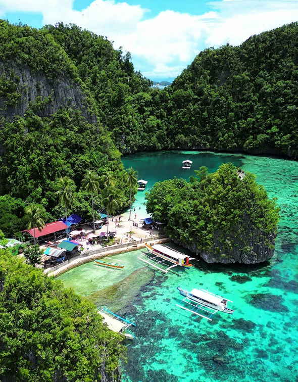

No airport, no bridge, no long causeway. Every trip to the Dinagat Islands ends on a boat out of Surigao City, so the real planning question is how you get yourself to that pier with enough daylight left to cross. Once you think of the journey as two halves, a gateway leg to Surigao and a short sea leg to Dinagat, the options sort themselves out quickly.
This guide walks through the three starting points most travellers use: Cebu, Manila and Surigao itself. It covers the flight and ship choices, the Butuan workaround when Surigao flights are full or badly timed, what the boat to San Jose costs, and the timing mistakes that leave people sleeping a night in Surigao they never planned for.
First-timers usually land in San Jose, the provincial capital, because that is where most homestays, inns and boat operators are. If your bed or tour starts in another town, check the arrival port before buying anything. Boats from Surigao do not all go to the same place.

The short answer: pick a gateway, then take the boat
Starting in Cebu
Fly or sail to Surigao
A short flight is the quickest choice. A passenger ship can cost less but takes far longer.
Starting in Manila
Butuan by air, or Cebu to Surigao
Fly to Butuan and ride about three hours north, or connect through Cebu on a flight into Surigao.
Already in Surigao
Boat to San Jose
Head to the Boulevard port area. The crossing takes roughly one to one and a half hours.
The Cebu route
Cebu is the most common jumping-off point for this corner of Mindanao, and you have three ways to cover the first half. Each one still ends with the same boat ride across to Dinagat.
Fly to Surigao City
When a flight lines up with your dates, this is the fastest way to do it. Book Mactan-Cebu International Airport to Surigao, then take a tricycle to the passenger terminal once you land. Tell the driver you are going to Dinagat, because boats for different destinations do not always leave from the same spot.
The flight itself is short. What eats the time is everything around it: baggage, the ride to the port, the ticket queue and the wait for the next departure. Pick a flight that lands with a few hours to spare before the boat you want. A late plane and a missed last boat means a hotel night in Surigao.
Take a passenger ship to Surigao
Shipping lines run between Cebu and Surigao, and an overnight sailing suits travellers who would rather sleep through the transfer than pay for a flight. Operating days, departure piers and boarding times differ by company, so check the current timetable for your date and confirm the baggage rules before you go.
A ship docking in Surigao does not put you next to the Dinagat boats. Ask where your ship arrives and where the San Jose boats leave, and give yourself time to get between the two.
Fly to Butuan, then go overland
When Surigao flights are sold out, pricey or badly timed, Butuan is the backup. Buses and vans run north to Surigao City, and the road leg commonly takes around three hours, longer if you wait for a van to fill or hit traffic. Compare the whole trip, not just the airfare. The airport transfer, the bus or van, the tricycle to the port and a possible night's stay can wipe out a cheaper ticket.
Starting in Manila
Manila has no direct sea or air link to Dinagat, so the trip always runs through a gateway city. Two flight plans are worth comparing.
Manila to Butuan, then road to Surigao
Fly out of Ninoy Aquino International Airport to Butuan, ride about three hours to Surigao, then cross. This often works out when the Butuan schedule or fare beats what is on offer for Surigao. If you land in Butuan in the late afternoon, do the arithmetic before leaving the airport. Three hours of road plus a port transfer may put you at the pier after the last useful boat, and a night in Butuan or Surigao is better than racing the clock.
Manila to Surigao with a Cebu connection
Some itineraries link Manila and Surigao through Cebu. These flights do not run every day, so check the dates you have in mind. Pay attention to how the tickets are sold. On a single booking, the airline usually handles rebooking if the first flight runs late. On two separate tickets, a missed connection is your problem to fix and pay for.
What about the bus?
You can travel overland from Manila, but it means many hours on the road and several transfers. Unless the long ride is part of the fun for you, flying to Butuan or Surigao saves days of a short holiday.
Surigao City to San Jose, step by step
The sea crossing
Surigao City to San Jose
FareAbout ₱240PlusTerminal feePay withCash
-
Step 1
Go to the right port
Boats to San Jose commonly leave from the Boulevard port area. Confirm the departure point with the shipping line or the ticket office before heading over, since services to other places can use different piers.
-
Step 2
Ask for San Jose by name
Say "San Jose, Dinagat Islands" at the window and check the destination printed on your ticket. Some boats go to other towns in the province.
-
Step 3
Keep cash ready
You will pay the fare and a port terminal fee. Small bills make it quicker.
-
Step 4
Cross
The trip usually takes one to one and a half hours, depending on the boat and the sea.
-
Step 5
Ride into town
Tricycles and other local rides wait at San Jose Port. If you are staying outside the town centre, ask your homestay or resort to send a pickup.
Flying out of Surigao after? Take an earlier boat back, not the last one of the day.
How much is the boat?
Fares depend on the operator and the vessel. Viel's Shipping Lines lists a regular one-way fare of about ₱240, plus the terminal fee, and other boats may charge a little more or less. Use it as a planning figure and confirm at the window.
Departure times shift with the season and the weather. Rough water can delay or cancel trips, so recheck the schedule the day before and again on the morning you travel. If you have a flight out of Surigao, skip the last boat of the day and take an earlier one.
Heading somewhere other than San Jose?
Boats also serve other ports in the province, such as Libjo and Tubajon, depending on the operator and the day. Landing at the wrong one can add a long road or boat transfer. Find out which town your accommodation or tour is in, then ask which port is closest. If you are joining an island-hopping trip, let the operator set the meeting time rather than turning up and hoping a boat is waiting.
Travel time by route
Routes to San Jose, Dinagat Islands
Planning estimates, not door-to-door promises
| Route | Legs | What to know |
|---|---|---|
| Cebu → Surigao (air) → San Jose Fastest | Flight, port transfer, boat | Quickest when flight and boat times line up |
| Cebu → Surigao (ship) → San Jose | Passenger ship, port transfer, boat | Can take most of a day or an overnight sailing |
| Cebu → Butuan → Surigao → San Jose | Flight, about 3 hours by road, boat | Add up transfer costs before choosing it |
| Manila → Butuan → Surigao → San Jose | Flight, about 3 hours by road, boat | A late landing may mean a night on the way |
| Manila → Cebu → Surigao → San Jose | Two flights, port transfer, boat | Leave a wide connection gap; check if it is one ticket |
| Surigao City → San Jose | Tricycle, boat | About 1 to 1.5 hours on the water |
Budgeting the journey
A single total goes out of date fast, so price each leg on its own and add them up per person:
- Flight or ship: the fare for your actual date, with baggage and booking fees.
- Butuan to Surigao: bus or van, plus rides to and from each terminal.
- Surigao rides: tricycles between the airport, your hotel and the pier.
- The boat: passenger fare and terminal fee.
- A spare night: in case arrival and boat times do not meet.
- On arrival: the ride from the port to your lodging.
Then look at total hours as well as total pesos. A cheap flight that forces an extra night can end up costing more than the pricier one that lands in time. Our ferry vs flight budget breakdown helps with that comparison across the country.
Five habits that keep the trip smooth
Leave room between the plane and the boat. If missing the crossing would wreck your plans, arrive in Surigao the night before.
Carry pesos. Ticket windows, terminals, tricycles and small inns often take cash only. Bring enough for fares, food and a surprise night.
Watch the weather. Trips get held when the sea turns. In unsettled months, keep a free day before your flight home.
Know both ports. Confirm where you leave from in Surigao and where you land in Dinagat, especially if you are not staying in San Jose.
Save fresh contacts. Get the current number for the shipping line or the provincial tourism office, and trust a same-week answer over an old schedule screenshot.
After you land
San Jose makes an easy first base. Most visitors arrive there, and boats for island hopping are easy to arrange. If you have a particular beach or town in mind, check how far it is from the capital before booking a room, since a place that looks close on the map can still need a long ride or a boat.
Keep arrival day light. After a flight, a road leg and a crossing, checking in, eating and sorting out tomorrow's boat is plenty. When you are ready to plan the rest, our Dinagat Islands travel guide covers the lagoons, beaches, cash and a three-day plan, and the Philippine ferry travel guide explains how booking and boarding work on other routes.
The best route is rarely the one with the lowest fare on the screen. It is the one that gets you to the Surigao pier early, with cash in your pocket and a day to spare if the sea says wait.

Comments
No comments yet. Been here recently? Share a tip or ask a question.
Leave a Reply